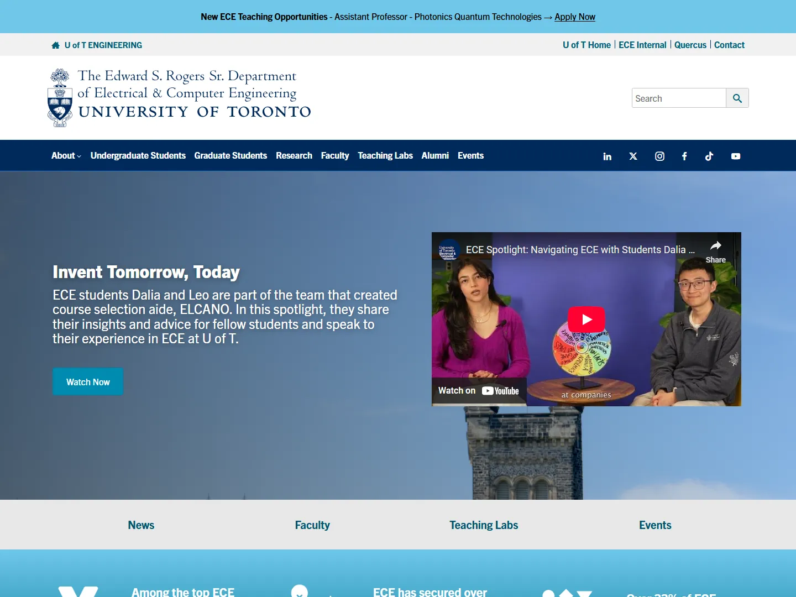

Domain
Education
Role
UX/UI and Front End
Duration
Jan – Mar 2025
Deliverables
Mockups + WordPress Dev
Tools
Figma, WordPress
Project Context
The Electrical & Computer Engineering (ECE) department at U of T needed to transform their academic homepage into a recruitment tool for prospective students, without losing rigorous compliance to cross-departmental brand standards. The challenge: content wasn’t lacking, but clarity, visual hierarchy, and navigation needed a fundamental rethink. Departmental identity and student-focused storytelling had to be balanced within tight stakeholder constraints.
Goals
1. Reimagine the homepage as a digital ambassador to attract prospective students
2. Improve clarity, navigation, and access to key info
3. Align and Ensure visual design and layout with Faculty of Applied Science & Engineering (FASE) web visual standards as well as the University of Toronto brand guidelines
4. Support a range of stakeholder needs; from students to faculty and industry partners
Before we delve into the case study, here's what the page looked like before I worked on it.
Key Challenges
Hero Section Lacked Impact
Legacy State: Hero section lacked student-focused visuals
Why it matters: Weak first impression for prospective students
Cluttered Navigation
Legacy State: Navigation had too many unorganized links
Why it matters: Users struggled to find key programs and events
Outdated Program and Event Content
Legacy State: Program and event content was outdated
Why it matters: Students could not quickly understand offerings
Limited Research and Co-op Visibility
Legacy State: Opportunities were buried or unclear
Why it matters: Students and partners could not see key opportunities
Design Process
1. Design Audit & Research
Assessed other FASE faculty sites and leading global engineering department portals
Mapped gaps: missing CTAs, unclear section hierarchy, outdated hero imagery
2. Wireframes & Mockups
Built wireframes in Figma to clarify information layout
Visual hierarchy focused on what prospective students searched for first
3. Stakeholder Presentations
Presented concepts to department leadership
Iterated based on feedback from academic admin, researchers, and staff
4. WordPress Development
Handled front-end implementation, ensuring responsive and modular section design
Deployed content and built reusable components for future campaigns
Design Audit & Research

Wireframes & Mockups
.png)
Presented Version
Final Design to WordPress Development
Hero Banner
Image+Video banner with contextualized department info
Outcome: Fixed outdated hero, providing a strong, engaging first impression
Quick Links
Visually grouped, mobile-friendly calls to action
Outcome: Simplified navigation and reduced user confusion
Programs & Events
Updated outdated content with modular cards and stats
Outcome: Improved clarity and made offerings easy to scan
Research & Co-op
Spotlight cards and updated stats with links
Outcome: Made research and co-op opportunities clear and visible
Currently Active

Summary of Core Changes
Hero Banner
Video and contextualized department info engage students and communicate the department’s identity
Quick Links
Grouped, mobile-friendly buttons simplify navigation and make key content easy to access
Programs & Events
Updated content in modular cards and stats highlights department programs. The events calendar widget displays upcoming events directly on the homepage
Research & Co-op
Spotlight cards and updated stats make opportunities clear, visible, and easy to update for students and partners
Modular Page Layout
The homepage uses a modular structure with images, videos, and easily editable content, ensuring updates are quick and consistent
What I Learned
The ECE Homepage Redesign turned a dense academic site into a clear, student‑focused recruitment tool. Guided by research, competitive benchmarking, and stakeholder input, the final design improves navigation, aligns with faculty branding, and highlights programs and events in just a few scrolls. The result is a responsive, modular homepage that strengthens trust, reflects departmental excellence, and supports future recruitment efforts.
Key Takeaway: Every page has a journey
A page is not just content. It has to be a narrative that guides users, shaping what they see, understand, and do.